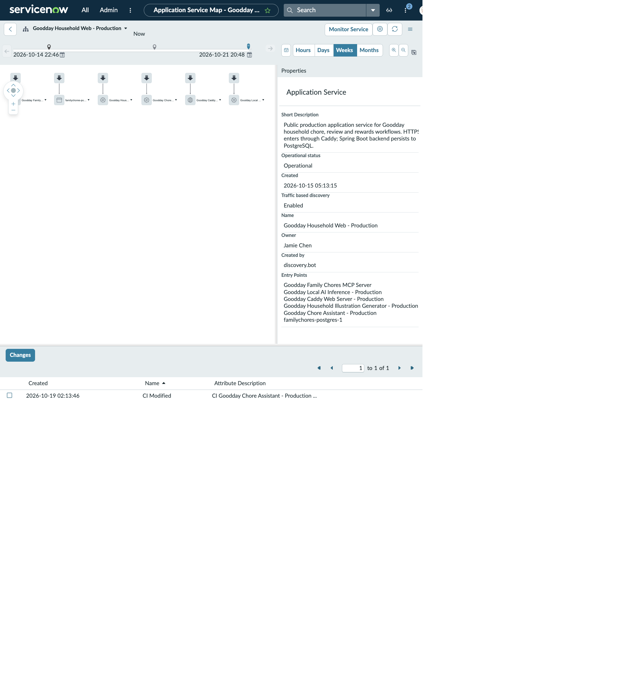

SERVICE OPERATIONS WORKSPACE · SERVICE MAPPING
Goodday Household Web - Production
Start at the health card, then follow the same service into its mapped topology. The alert page is separate: the alert’s impacted-services list showed both this calculated service and Goodday Production as OK at that capture.
SERVICE DASHBOARD · HEALTH CARD
Goodday Household Web - Production
- Service severity
- OK
- Business criticality
- 4 - not critical
- Owner
- Jamie Chen
- Available actions
- Service Details · Service Map
SERVICE DETAILS · MAPPED APPLICATION SERVICE
Goodday Production
- Service name
- Goodday Production
- Business criticality
- 1 - most critical
- Operational status
- Operational
- Process status
- Approved
- Owner
- Abraham Lincoln
- Related services
- Goodday Local Artificial Intelligence Inference - Production; Goodday Household Web - Production
Goodday Productionrelates toGoodday Household Web - ProductionandGoodday Local Artificial Intelligence Inference - Production
SERVICE MAPPING · SERVICE RECORD
Goodday Household Web - Production
- Operational status
- Operational
- Discovery status
- Done
- Traffic-based discovery
- true
- Owner
- Jamie Chen
- Business criticality
- 4 - not critical
- Last map change noted
- configuration item modified 2026-10-19
Service description: public production service; HTTPS enters through Caddy; the Spring Boot application persists to PostgreSQL. The map recorded the named entry points and supporting components below.
Mapped componentGoodday Caddy Web Server - Production
Mapped componentGoodday Chore Assistant - Production
Mapped componentGoodday Local Artificial Intelligence Inference - Production
Mapped componentfamilychores-postgres-1
Mapped componentGoodday Household Illustration Generator - Production
Mapped componentGoodday Family Chores Model Context Protocol Server
The component cards preserve the node names visible in the map. The only dependency sequence stated in the record description is HTTPS through Caddy, then Spring Boot persistence to PostgreSQL; other edges are left as represented in the original map.
MAPPED APPLICATION SERVICES
Nearby service rows
| Service | Business criticality | Discovery status | Operational status | Traffic-based discovery |
|---|---|---|---|---|
| Goodday Household Web - Production | 4 - not critical | Done | Operational | true |
| Goodday Recovery Access - Production | 4 - not critical | Done | Operational | true |
| ServiceNow Event Management | 4 - not critical | Done | Operational | true |
| Goodday Production | 1 - most critical | Done | Operational | true |
WORKSPACE VISUALS
service health and mapped topology
See the working view in context. The record details above remain available here as readable HTML.
